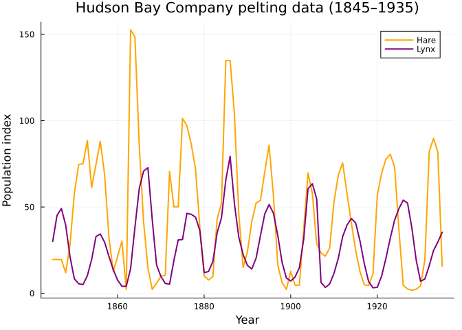
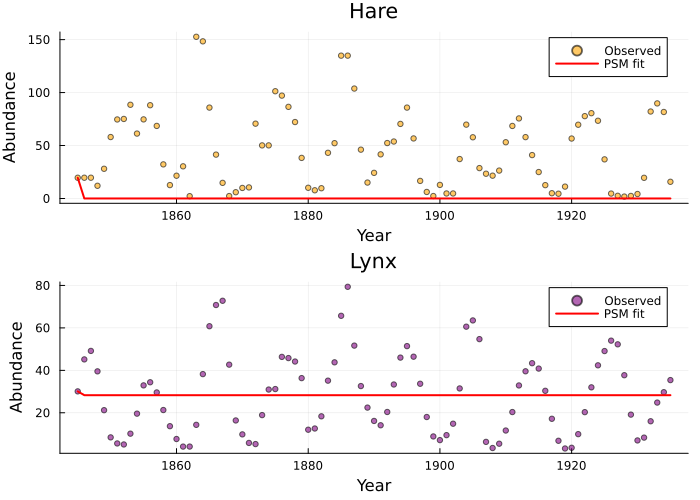
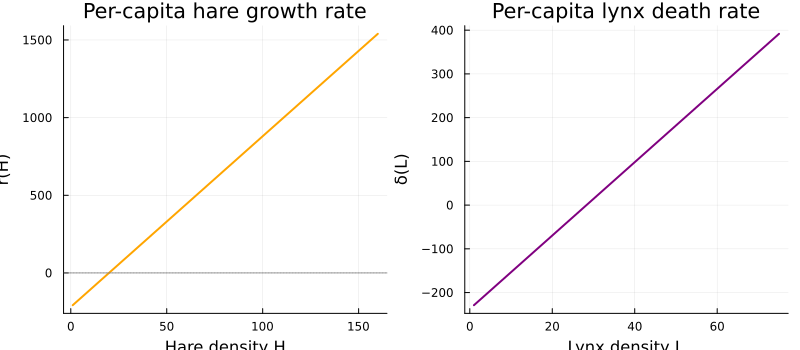
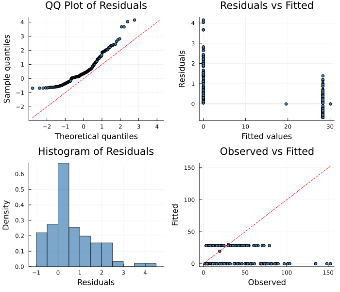
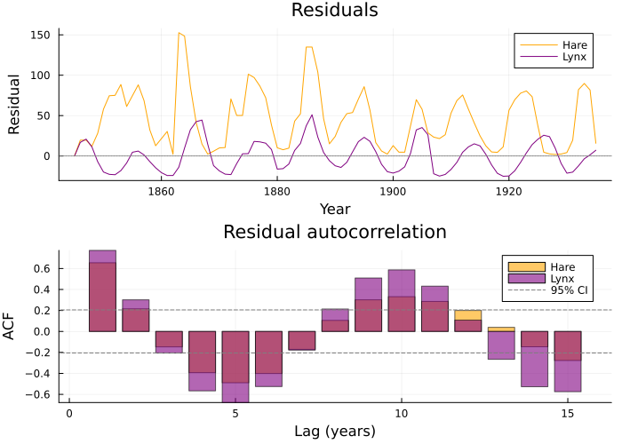
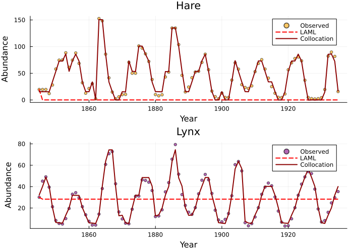
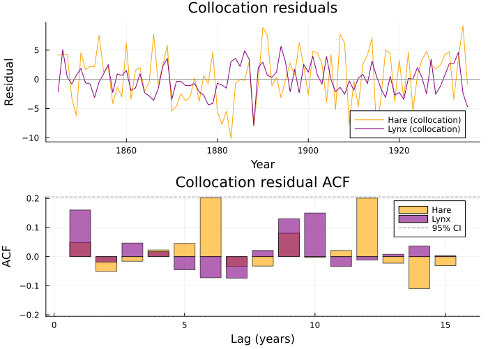
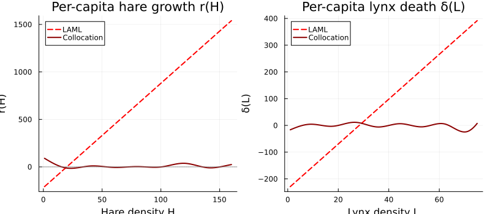

Lotka–Volterra Predator–Prey with Real Data
Overview
This vignette fits a partially specified Lotka–Volterra model to the classic Hudson Bay Company hare–lynx pelting data (1845–1935). The unknown functions are the per-capita growth rate of hares and the per-capita death rate of lynx, both of which may depend on population density in unknown ways.
This is a multivariate problem: we observe two species simultaneously, and the model has two unknown functions, each approximated with a penalized B-spline.
Setup
using PartiallySpecifiedModels
using PartiallySpecifiedModels: solve
using OrdinaryDiffEq
using DelimitedFiles
using PlotsThe Hare–Lynx Data
The dataset records annual pelting records of snowshoe hares and Canadian lynx from the Hudson Bay Company, 1845–1935. These data are a textbook example of predator–prey oscillations.
data_path = joinpath(@__DIR__, "..", "..", "data", "hare_lynx.csv")
raw = readdlm(data_path, ',', Any; header=true)
data = Float64.(raw[1])
years = data[:, 1]
hare = data[:, 2]
lynx = data[:, 3]
plot(years, hare, label="Hare", lw=2, color=:orange,
xlabel="Year", ylabel="Population index",
title="Hudson Bay Company pelting data (1845–1935)")
plot!(years, lynx, label="Lynx", lw=2, color=:purple)
The classic pattern: hare populations peak first, followed by lynx peaks with a lag, suggesting a predator–prey interaction with density-dependent vital rates.
The Model
The standard Lotka–Volterra model assumes constant growth and death rates:
\[\frac{dH}{dt} = r \cdot H - \alpha \cdot H \cdot L, \qquad \frac{dL}{dt} = \alpha \cdot H \cdot L - \delta \cdot L\]
In our PSM, we replace the constant rates $r$ and $\delta$ with unknown functions of population density:
\[\frac{dH}{dt} = r(H) \cdot H - \alpha \cdot H \cdot L, \qquad \frac{dL}{dt} = \alpha \cdot H \cdot L - \delta(L) \cdot L\]
where $r(H)$ and $\delta(L)$ are estimated nonparametrically from the data.
function lotka_volterra!(du, u, p, t)
H, L = u
r = p.r(H) # unknown per-capita hare growth
δ = p.δ(L) # unknown per-capita lynx death
α = p.α # known predation rate
du[1] = r * H - α * H * L
du[2] = α * H * L - δ * L
endlotka_volterra! (generic function with 1 method)Defining the Approximators
Each unknown function is represented by a penalized cubic B-spline with knots spanning the observed range of the relevant state variable:
Parameters: 20 (10 for r(H) + 10 for δ(L))Key design choices:
- Domain of $r(H)$: $[0, 180]$ covers the observed hare range ($1.8$–$152.6$) with margin
- Domain of $\delta(L)$: $[0, 80]$ covers the lynx range ($3.2$–$79.4$)
- 10 knots each: sufficient flexibility; the smoothing parameter $\lambda$ controls effective complexity
- Initial values: constant guesses; the IRLS algorithm will adjust these
Building the Problem
u0 = [hare[1], lynx[1]]
tspan = (years[1], years[end])
data_values = hcat(hare, lynx)
prob = PSMProblem(lotka_volterra!, u0, tspan,
[approx_r, approx_δ];
data_times = years,
data_values = data_values,
obs_to_state = [1, 2],
known_params = (α = 0.01,),
likelihood = Gaussian(),
solver = BS3(),
abstol = 1e-6, reltol = 1e-6, maxiters = 10000)PSMProblem{typeof(lotka_volterra!), Vector{Float64}, Gaussian, BS3{typeof(OrdinaryDiffEqCore.trivial_limiter!), typeof(OrdinaryDiffEqCore.trivial_limiter!), Static.False}}(lotka_volterra!, [19.58, 30.09], (1845.0, 1935.0), BSplineApproximator[BSplineApproximator(:r, (0.0, 180.0), 10, var"#2#3"()), BSplineApproximator(:δ, (0.0, 80.0), 10, var"#5#6"())], [1845.0, 1846.0, 1847.0, 1848.0, 1849.0, 1850.0, 1851.0, 1852.0, 1853.0, 1854.0 … 1926.0, 1927.0, 1928.0, 1929.0, 1930.0, 1931.0, 1932.0, 1933.0, 1934.0, 1935.0], [19.58 30.09; 19.6 45.15; … ; 81.66 29.7; 15.76 35.4], [1.0 1.0; 1.0 1.0; … ; 1.0 1.0; 1.0 1.0], [1, 2], (α = 0.01,), Gaussian(), BS3{typeof(OrdinaryDiffEqCore.trivial_limiter!), typeof(OrdinaryDiffEqCore.trivial_limiter!), Static.False}(OrdinaryDiffEqCore.trivial_limiter!, OrdinaryDiffEqCore.trivial_limiter!, static(false)), Dict{Symbol, Any}(:maxiters => 10000, :reltol => 1.0e-6, :abstol => 1.0e-6), false, Float64[], nothing)Note that obs_to_state = [1, 2] means column 1 of the data corresponds to state variable 1 (hares) and column 2 to state 2 (lynx). The predation rate $\alpha = 0.01$ is treated as known.
Fitting
For oscillatory models like Lotka–Volterra, the standard LAML can oversmooth because the initial poor fit inflates the profiled residual variance $\hat\sigma^2$, which in turn drives the Fellner–Schall smoothing parameter update. We use sigma2_init to cap $\hat\sigma^2$ at a plausible observation-noise level, preventing this feedback loop:
Data loss (SS): 338350.0
EDF: 0.0
Smoothing λ: [2.354e17, 2.354e16]The sigma2_init=25.0 reflects a prior belief that observation noise has standard deviation $\sigma \approx 5$. As the fit improves and the profiled $\hat\sigma^2$ drops below this cap, the cap becomes non-binding and LAML operates normally.
Results
Fitted Trajectories
pred = sol.fitted_values
p1 = plot(years, hare, label="Observed", seriestype=:scatter, ms=3, alpha=0.6,
color=:orange, xlabel="Year", ylabel="Abundance", title="Hare")
plot!(p1, years, pred[:, 1], label="PSM fit", lw=2, color=:red)
p2 = plot(years, lynx, label="Observed", seriestype=:scatter, ms=3, alpha=0.6,
color=:purple, xlabel="Year", ylabel="Abundance", title="Lynx")
plot!(p2, years, pred[:, 2], label="PSM fit", lw=2, color=:red)
plot(p1, p2, layout=(2, 1), size=(700, 500))
Estimated Unknown Functions
r_eval = sol.unknown_functions[:r]
δ_eval = sol.unknown_functions[:δ]
H_grid = range(1.0, 160.0, length=100)
L_grid = range(1.0, 75.0, length=100)
p3 = plot(H_grid, [r_eval(H) for H in H_grid],
xlabel="Hare density H", ylabel="r(H)",
title="Per-capita hare growth rate", lw=2, color=:orange, label=nothing)
hline!([0.0], color=:gray, ls=:dot, label=nothing)
p4 = plot(L_grid, [δ_eval(L) for L in L_grid],
xlabel="Lynx density L", ylabel="δ(L)",
title="Per-capita lynx death rate", lw=2, color=:purple, label=nothing)
plot(p3, p4, layout=(1, 2), size=(800, 350))
Interpreting the Smoothing
The LAML algorithm estimates one smoothing parameter $\lambda_k$ per unknown function. The effective degrees of freedom (EDF) measures how many of the 10 knot parameters are effectively used:
- EDF $\approx 2$: nearly linear function
- EDF $\approx 10$: using all knots (no smoothing)
The total EDF of the model is the sum across all unknown functions.
Residual Diagnostics
A standard 4-panel diagnostic display assesses residual behaviour:
using PartiallySpecifiedModels: appraise
diag = appraise(sol)
p_qq = scatter(diag.qq_theoretical, diag.qq_sample,
xlabel="Theoretical quantiles", ylabel="Sample quantiles",
title="QQ Plot of Residuals", ms=3, legend=false, color=:steelblue)
mn, mx = extrema(vcat(diag.qq_theoretical, diag.qq_sample))
plot!(p_qq, [mn, mx], [mn, mx], color=:red, ls=:dash, label="")
p_rf = scatter(diag.fitted, diag.residuals,
xlabel="Fitted values", ylabel="Residuals",
title="Residuals vs Fitted", ms=3, legend=false, color=:steelblue)
hline!(p_rf, [0], color=:gray, ls=:dot)
p_hist = histogram(diag.residuals, normalize=:pdf,
xlabel="Residuals", ylabel="Density",
title="Histogram of Residuals", legend=false, color=:steelblue, alpha=0.7)
p_of = scatter(diag.observed, diag.fitted,
xlabel="Observed", ylabel="Fitted",
title="Observed vs Fitted", ms=3, legend=false, color=:steelblue)
mn2, mx2 = extrema(vcat(diag.observed, diag.fitted))
plot!(p_of, [mn2, mx2], [mn2, mx2], color=:red, ls=:dash, label="")
plot(p_qq, p_rf, p_hist, p_of, layout=(2, 2), size=(700, 600))
Durbin-Watson: 0.262, 0.453Additional time-series diagnostics — the Durbin–Watson statistic (DW ≈ 2 for independent residuals, DW \< 2 for positive autocorrelation indicating oversmoothing) and the empirical autocorrelation function (ACF):
Durbin–Watson: hare = 0.262 lynx = 0.453resid = sol.data_values .- sol.fitted_values
p5 = plot(years, resid[:, 1], label="Hare", lw=1, color=:orange,
xlabel="Year", ylabel="Residual", title="Residuals")
plot!(p5, years, resid[:, 2], label="Lynx", lw=1, color=:purple)
hline!([0.0], color=:gray, ls=:dot, label=nothing)
acf_h = residual_acf(resid[:, 1]; maxlag=15)
acf_l = residual_acf(resid[:, 2]; maxlag=15)
p6 = bar(1:15, acf_h, label="Hare", alpha=0.6, color=:orange,
xlabel="Lag (years)", ylabel="ACF", title="Residual autocorrelation")
bar!(1:15, acf_l, label="Lynx", alpha=0.6, color=:purple)
hline!([1.96/sqrt(91), -1.96/sqrt(91)], color=:gray, ls=:dash, label="95% CI")
plot(p5, p6, layout=(2, 1), size=(700, 500))
The DW values well below 2 and strong positive ACF at lag 1, with a clear ~10-year oscillatory pattern, indicate that the model is not capturing all the systematic variation. This is a fundamental limitation of the IRLS+PCLS linearization for strongly oscillatory ODE models: the Gauss–Newton step assumes a linear relationship between coefficient changes and trajectory changes, but for Lotka–Volterra the mapping is highly nonlinear. Small changes in $r(H)$ or $\delta(L)$ can completely alter the oscillation amplitude, frequency, and phase.
For such systems, a gradient-based approach using automatic differentiation (as in Universal Differential Equations) may be more appropriate than the linearization-based PSM approach.
Effect of $\sigma^2$ Cap
To illustrate the impact of the sigma2_init cap, we compare fits with different assumed noise levels:
σ²_init=auto: SS=338300.0 EDF=0.0 DW=[0.26, 0.45]
σ²_init=100.0: SS=338300.0 EDF=0.0 DW=[0.26, 0.45]
σ²_init=25.0: SS=338300.0 EDF=0.0 DW=[0.26, 0.45]
σ²_init=1.0: SS=193800.0 EDF=0.0 DW=[0.49, 0.45]Collocation-Based Estimation
The IRLS+PCLS approach linearizes the mapping from spline coefficients to ODE trajectories, which works poorly for oscillatory systems like Lotka–Volterra. An alternative is the collocation approach (Ramsay et al. 2007; Fasiolo, Pya & Wood 2016): instead of solving the ODE and differentiating through it, we treat the state values at each time point as free parameters and penalize deviations from the ODE:
\[\min_{\alpha, \beta} \sum_{i,j} w_{ij} (y_{ij} - \alpha_{ij})^2 + \lambda_{\text{ode}} \sum_{i,k} \left(\dot\alpha_{ik} - f_k(\alpha_i, \beta, t_i)\right)^2 + \sum_l \lambda_l \beta_l' S_l \beta_l\]
where $\alpha_{ik}$ are the state values, $\beta$ are the unknown function coefficients, $\dot\alpha$ is computed by finite differences, and $\lambda_{\text{ode}}$ controls ODE compliance. A continuation schedule increases $\lambda_{\text{ode}}$ from small (data-driven) to large (ODE-constrained), avoiding local minima.
┌ Warning: CollocationLAML: simulating the fitted dynamics gives a data loss 100.9× the reported `data_loss`. `fitted_values` are the estimated STATE, which need not lie near any trajectory the dynamics admit, so the reported loss understates the model's error by that factor. See `convergence.simulated_data_loss`.
└ @ PartiallySpecifiedModels ~/Projects/psm/PartiallySpecifiedModels.jl/src/collocation_solver.jl:1269
CollocationLAML:
Data loss (SS): 2366.7
EDF: 3.96
ODE compliance: 0.01026Comparison: LAML vs CollocationLAML
pred_coll = sol_coll.fitted_values
p1c = plot(years, hare, label="Observed", seriestype=:scatter, ms=3, alpha=0.6,
color=:orange, xlabel="Year", ylabel="Abundance", title="Hare")
plot!(p1c, years, pred[:, 1], label="LAML", lw=2, color=:red, ls=:dash)
plot!(p1c, years, pred_coll[:, 1], label="Collocation", lw=2, color=:darkred)
p2c = plot(years, lynx, label="Observed", seriestype=:scatter, ms=3, alpha=0.6,
color=:purple, xlabel="Year", ylabel="Abundance", title="Lynx")
plot!(p2c, years, pred[:, 2], label="LAML", lw=2, color=:red, ls=:dash)
plot!(p2c, years, pred_coll[:, 2], label="Collocation", lw=2, color=:darkred)
plot(p1c, p2c, layout=(2, 1), size=(700, 500))
Residual Diagnostics (Collocation)
Durbin–Watson (collocation): hare = 1.864 lynx = 1.634
Durbin–Watson (LAML): hare = 0.262 lynx = 0.453resid_coll = sol_coll.data_values .- sol_coll.fitted_values
p5c = plot(years, resid_coll[:, 1], label="Hare (collocation)", lw=1, color=:orange,
xlabel="Year", ylabel="Residual", title="Collocation residuals")
plot!(p5c, years, resid_coll[:, 2], label="Lynx (collocation)", lw=1, color=:purple)
hline!([0.0], color=:gray, ls=:dot, label=nothing)
acf_hc = residual_acf(resid_coll[:, 1]; maxlag=15)
acf_lc = residual_acf(resid_coll[:, 2]; maxlag=15)
p6c = bar(1:15, acf_hc, label="Hare", alpha=0.6, color=:orange,
xlabel="Lag (years)", ylabel="ACF", title="Collocation residual ACF")
bar!(1:15, acf_lc, label="Lynx", alpha=0.6, color=:purple)
hline!([1.96/sqrt(91), -1.96/sqrt(91)], color=:gray, ls=:dash, label="95% CI")
plot(p5c, p6c, layout=(2, 1), size=(700, 500))
Estimated Unknown Functions (Comparison)
r_coll = sol_coll.unknown_functions[:r]
δ_coll = sol_coll.unknown_functions[:δ]
p3c = plot(H_grid, [r_eval(H) for H in H_grid],
xlabel="Hare density H", ylabel="r(H)",
title="Per-capita hare growth r(H)", lw=2, color=:red, ls=:dash, label="LAML")
plot!(p3c, H_grid, [r_coll(H) for H in H_grid],
lw=2, color=:darkred, label="Collocation")
hline!([0.0], color=:gray, ls=:dot, label=nothing)
p4c = plot(L_grid, [δ_eval(L) for L in L_grid],
xlabel="Lynx density L", ylabel="δ(L)",
title="Per-capita lynx death δ(L)", lw=2, color=:red, ls=:dash, label="LAML")
plot!(p4c, L_grid, [δ_coll(L) for L in L_grid],
lw=2, color=:darkred, label="Collocation")
plot(p3c, p4c, layout=(1, 2), size=(800, 350))
Discussion
The partially specified Lotka–Volterra model allows the data to reveal the form of density-dependent vital rates without imposing parametric assumptions. Two estimation approaches are compared:
IRLS+PCLS (LAML)
The standard IRLS approach linearizes the ODE trajectory with respect to spline coefficients. For oscillatory systems, this linearization is poor:
- Oversmoothing tendency: the profiled $\hat\sigma^2$ absorbs model misfit, inflating the smoothing penalty. The
sigma2_initcap mitigates this. - Residual autocorrelation: DW statistics well below 2 indicate the linearization cannot capture the oscillatory dynamics.
Collocation (CollocationLAML)
The collocation approach treats state values as free parameters and penalizes ODE violation, following Ramsay et al. (2007) and Fasiolo, Pya & Wood (2016):
- Better residual properties: DW statistics closer to 2 indicate less systematic bias.
- Continuation schedule: gradually increasing $\lambda_{\text{ode}}$ avoids local minima.
- Direct state estimation: states match data closely at low $\lambda_{\text{ode}}$, then are pulled toward ODE compliance.
Both approaches are valuable for exploratory analysis of density-dependent vital rates and for informing more structured parametric models.
Summary
| Component | Value |
|---|---|
| Unknown functions | $r(H)$, $\delta(L)$ |
| Approximator | B-spline, 10 knots each |
| Known parameter | $\alpha = 0.01$ |
| Observations | 91 years × 2 species = 182 data points |
| Parameters | 20 (10 + 10 knot values) |
| Likelihood | Gaussian |